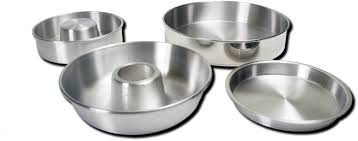
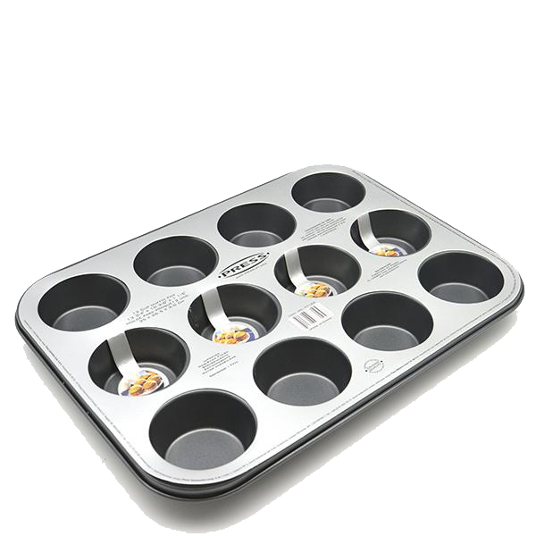

Moldes de aluminio
Los moldes de aluminio son un elemento esencial en cualquier cocina, tanto para profesionales como para aficionados a la repostería. Son versátiles, económicos y duraderos, lo que los convierte en una opción ideal para una gran variedad de tareas culinarias
Moldes redondos
Los moldes redondos para hornear vienen en una amplia variedad de tamaños, desde pequeños moldes individuales para cupcakes hasta moldes grandes para pasteles familiares. El tamaño del molde que elijas dependerá de la cantidad de personas que desees servir y del tipo de postre que vayas a preparar.

Tipos de moldes de aluminio:
-
Moldes para hornear:
Los moldes para hornear de aluminio son ideales para pasteles, galletas, brownies, tartas y otros productos horneados. Vienen en una variedad de formas y tamaños, para que puedas encontrar el molde perfecto para cada receta
 - Moldes para muffins:
Los moldes para muffins de aluminio son perfectos para muffins, cupcakes y otros postres pequeños. Suelen tener una forma cónica con un fondo plano, lo que facilita la extracción de los muffins una vez horneados.
 -
Moldes para tartas:
Los moldes para tartas de aluminio son ideales para tartas de frutas, tartas de queso y otros postres. Vienen en una variedad de tamaños y profundidades, para que puedas encontrar el molde perfecto para tu receta.